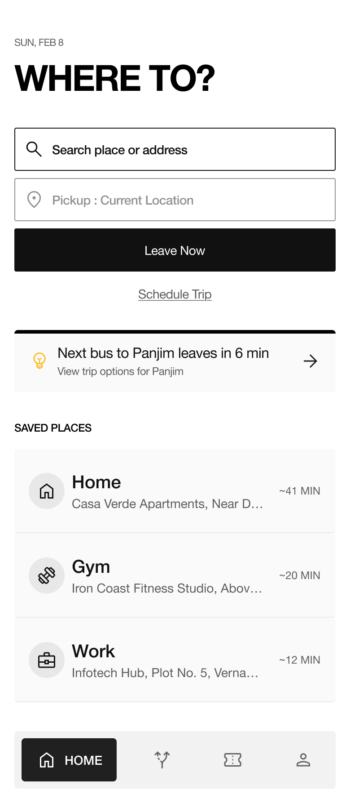
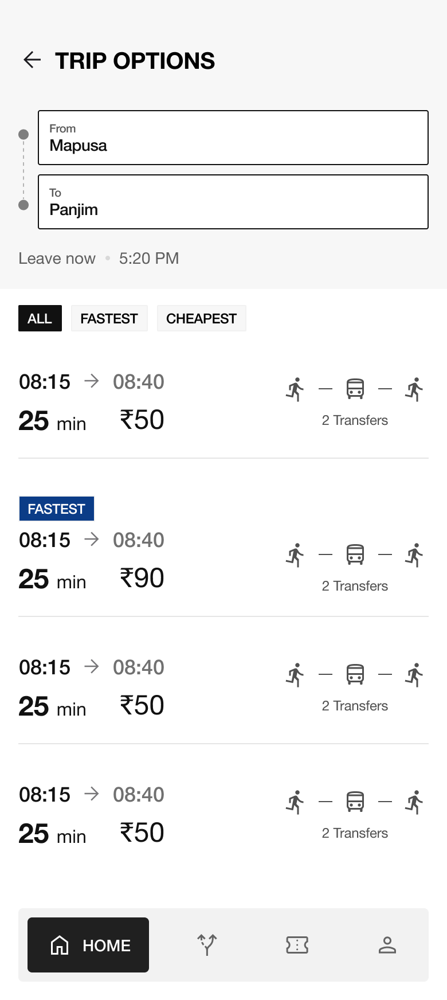
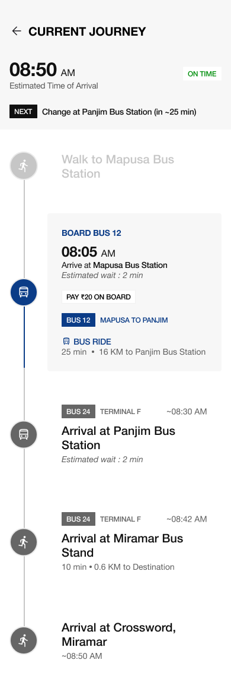
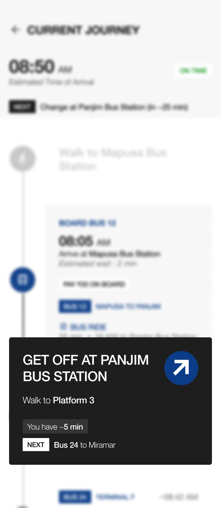
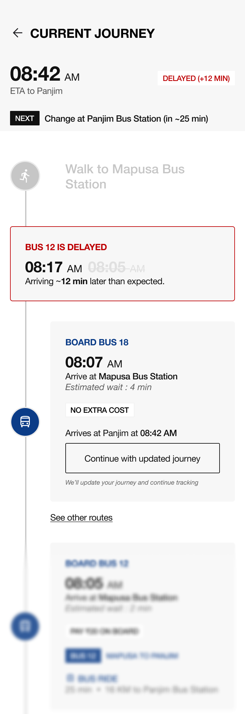

A journey management system for urban multi-modal commuting
01 · Provocation
Most people don't care whether they take a bus, a metro, or an auto. They care about one thing: getting from A to B, on time, without having to think too hard.
But almost every mobility app is built around modes: one app for ride-hailing, another for transit, a third for bike share, with no continuity between them. The brief for RouteX asked me to connect different modes into a single, seamless end-to-end journey.
Not: how do I surface all available transport modes? But: how do I design a system that treats every journey (including disrupted ones) as one continuous experience that a stressed, distracted user can trust?
This reframe changed every decision I made. It meant the homepage couldn't be a transport picker. The active journey screen couldn't be a map. And a delayed bus couldn't be an alert. It had to become a new plan.
The sections that follow are not a walkthrough of screens. They are an account of the decisions I made, the problems that forced them, and the tradeoffs I accepted along the way.
02 · Mental Model
Before a single screen was drawn, I had to understand how users actually think about travel. When I studied how commuters experience a multi-modal journey, a clear three-phase structure emerged, and each phase demands a fundamentally different interface posture.
User has time and can evaluate options carefully. Interface should offer clarity and comparison , without overwhelming. The interface wants options, not answers.
User is moving, stressed, time-pressured. Interface must communicate the single most important thing in under two seconds. No map. No options. One instruction.
User needs answers, not options. The system must make the decision and , not outsource the decision to the user at exactly the wrong moment.
Most transport apps are good at Planning. A few are decent at Execution. Almost none are thoughtful about Disruption.
Designing Disruption as a first-class experience (not an edge case) was the central product bet in RouteX. This framing had direct design consequences. A system that treats all three phases the same, showing everything at all times, would fail users at the exact moment they need it most.
03 · Design Principles
Rather than generating a long list of UX heuristics, I wanted a small set of principles that would resolve real design conflicts throughout the project. Every principle below was stress-tested against at least one concrete decision.
04 · Visual Language
The visual direction wasn't chosen for aesthetics. It was chosen for readability under pressure. I took deliberate inspiration from transit wayfinding systems, particularly the NYC subway, rather than consumer mobility apps like Citymapper or Google Maps.
This translated into three specific choices:
The most common mistake in mobility app homescreens is treating them like dashboards: a map, recent trips, saved locations, promotions, suggested destinations. The logic is that showing more helps users find what they need. The reality is that it raises the cognitive entry cost for the most common task: starting a trip.

Once a destination is entered, the instinct is to show everything: maps, step-by-step breakdowns, real-time vehicle positions, multi-mode icons. At the planning stage, users need to make one comparison: which journey best fits my constraints right now? That requires three data points: time, cost, and transfers. Everything else is noise until they choose.

The interface had to change personality the moment the journey began. Rather than building a separate 'navigation screen,' I evolved the Journey Details view into an execution mode. Same architecture, different hierarchy. The distinction matters: a new screen requires a cognitive reset. An evolved screen carries continuity; the user already knows where they are in the interface.
At any moment, the user should know exactly what they need to do next, and nothing else.

I deliberately avoided turn-by-turn navigation. Most multi-modal journeys involve significant waiting: at bus stops, on a train, between transfers. Turn-by-turn was designed for continuous movement (driving). Imposing that model on a journey with stops and waits creates visual complexity without useful output.
Transfers are the highest-anxiety moments in a multi-modal journey. The user is leaving one vehicle, navigating an unfamiliar space, and trying not to miss the next connection, often under time pressure.

A disruption is a moment of trust. The user is mid-journey, time-pressured, and anxious. What the system does in the next five seconds determines whether the user trusts it or abandons it. Most apps handle disruptions with alerts: banners, notifications, modals. Alerts shift the burden to the user. They say: something changed, figure out what to do.
A disruption is not an alert. It is a journey state change. The system's job is not to tell the user that something changed. Its job is to have already figured out what to do about it, and to present that decision for confirmation, not deliberation.

08 · Scope Decisions
Scope decisions are design decisions. The brief invited exhaustive feature thinking. I made a deliberate choice not to design everything; getting the core journey system right was more valuable than spreading the design thin across every edge case.
09 · Future Work
RouteX was designed without user testing, a known limitation of any timed challenge. Good design under constraints is not finished design. Below are the three areas I'd prioritise for validation if this moved forward.
10 · Final Reflection
"The best design for high-stakes moments is not more information. It is fewer decisions."
RouteX was not complex in terms of feature count. It was complex in terms of context. The same user, on the same journey, needs the interface to behave fundamentally differently depending on whether they're planning, moving, or dealing with a disruption.
The principles I used (journey-first, glanceable, calm over clever) were not aesthetic preferences. They were functional constraints derived from a specific insight about when and how people use transit apps. Every major decision in this project traces back to at least one of them.
What I'm most proud of is not the disruption screen's visual design. It's the reasoning behind it: that a disruption should not increase the user's decision-making burden. That insight, and the willingness to act on it even when it means showing less, is what I hope comes through in this case study.